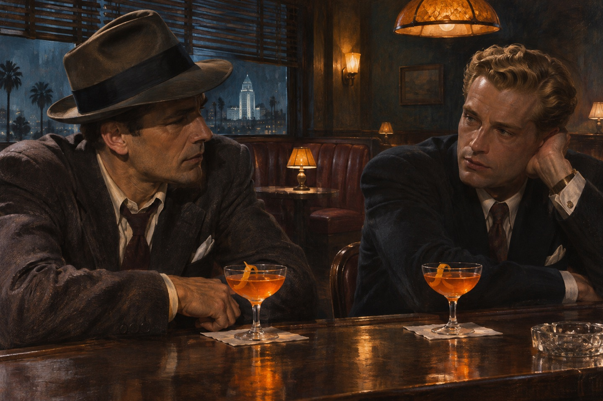
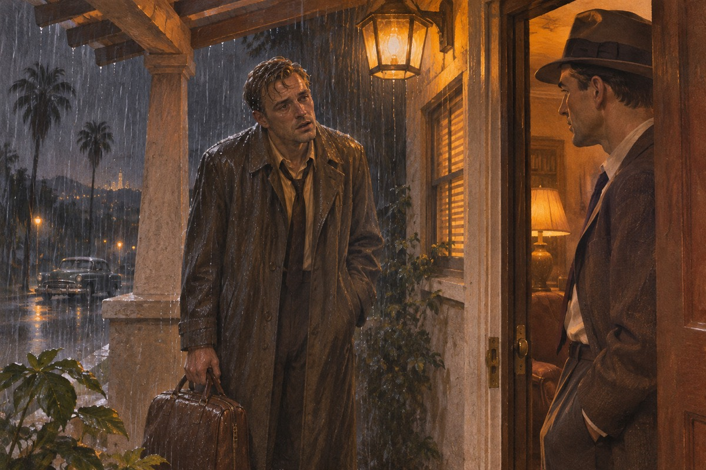

台阶上的醉汉
晚上十一点，马洛把车停在俱乐部外面，看见一个男人坐在台阶上。那人穿着夜礼服，一只袖子撕破了，头发垂在额前，笑得很客气，像一个被人丢下的客人。他的同伴已经开车走了。马洛走过去，说：需要帮忙吗。那人抬起头，说：我住得不远，可我不知道在哪。马洛说：上车吧。那人说话很慢，一个字一个字往外放，像在掂量每个字值多少钱。马洛扶他上车的时候，闻到他身上有酒味、香水味，还有一点雨的味道。他后来想，如果那天晚上他直接开走，后面的事也许都不会发生。可他不是那样的人。
一杯螺丝起子
马洛把他送到公寓，那人请马洛上去喝一杯。他调了两杯螺丝起子，手法很熟。他说自己叫特里·伦诺克斯。马洛问：你是做什么的。他说：现在是吃软饭的。他说这话的时候没有一点难为情，像在说天气。马洛说：至少你诚实。他说：诚实不花钱。公寓很小，只有一张床、一把椅子、一个书架。书架上摆着几本诗集，书脊都翻旧了。马洛问：你读诗。他说：我太太读。马洛问：那你呢。他说：我读她读过的。他把酒递过来，杯子擦得很干净。
两个酒鬼
他们以后又见过几次，每次都喝螺丝起子，都不多话。马洛发现这个人有教养，说话带一点英国腔，酒喝到某个点上就停，从不失态。有一次马洛问他：你在战场上做过什么。特里说：做过一些不该做的事。马洛说：谁都做过。特里说：不，我做的那些，跟别人不一样。有一次特里说：你知道人为什么会喝酒吗。马洛说：因为好喝。特里说：因为喝了以后，昨天的事就变成别人的了。他说完，把杯子放下，说：我昨天的事太多了。马洛没有说话，给他又倒了一杯。

西尔维亚
特里娶了西尔维亚·伦诺克斯，亿万富翁哈伦·波特的女儿。有一天他们在酒吧遇到，西尔维亚喝多了，当着一屋子人的面说：这个人是我从垃圾堆里捡的。特里站着没动，脸上还带着笑。马洛站起来，说：太太，你喝多了。西尔维亚看了他一眼，说：你又是谁。马洛说：一个管闲事的人。那天晚上特里一句话也没说，把酒喝完，站起来，替西尔维亚拉开椅子，然后走出去。马洛跟出去，看见他站在街边，手插在口袋里，看着来往的车。马洛说：你可以不必这样。特里说：我知道。他说：可我欠她的。
半夜的门铃
一个雨夜，特里来敲门。他脸色很难看，手里提着一个包。他说：我需要你送我去机场。马洛问：出什么事了。他说：西尔维亚死了。马洛站在门口，看了他三秒钟，说：上车。他没有问怎么死的，也没有问是不是他杀的。他知道问了也没有用。车开到半路，特里忽然说：我没有杀她。马洛说：我知道。特里说：你怎么知道。马洛说：因为你要是杀了人，不会来找我，你会直接跑。特里笑了一下，说：你比我自己还了解我。他把头靠在车窗上，闭上了眼睛。

最后一句话
在机场，特里把一只信封塞给马洛，说：如果我不回来，你替我收着。马洛说：你会回来的。特里笑了一下，说：你这个人真奇怪，明明不信，还要说好听的。他走进登机口，回头挥了挥手。马洛站在那儿，看着飞机起飞，然后回家睡了三个小时。第二天早上警察来了。信封很薄，马洛捏了捏，知道里面是一张纸币和一张纸。他没有当场打开。他把信封放进内袋，开车回家，路上没有开收音机。第二天早上七点，门铃响了，外面站着两个人，一个穿警服，一个穿便衣。便衣说：马洛先生，我们谈谈。
三天
马洛被关三天，问了十七遍。他一句话也不改：我送他到机场，我不知道他去了哪，我没问他为什么走。警察说：你这是在替一个杀人犯挡枪。马洛说：我是在替一个朋友挡枪。第三天他们放了他，说：你运气好。马洛说：我一向运气好。奥尔斯坐在对面，把一支烟抽到手指，说：你知道我最讨厌什么吗。马洛说：知道，讨厌不合作的人。奥尔斯说：不，我讨厌聪明人。他说：聪明人总以为自己能替别人扛事，最后扛的都是自己的棺材。他把烟按灭，说：你可以走了。
墨西哥的枪声
报纸上登出来：特里·伦诺克斯在墨西哥一个小镇吞枪自杀，留下一份自白，承认杀了妻子。马洛把报纸看了三遍。他想不通——一个连酒都喝得有分寸的人，会写一份错字连篇的自白书。他去找那个写报道的记者，记者说：我抄的警方通报，一个字没改。朗尼·摩根在警局门口拦住马洛，说：你别查了。马洛说：为什么。摩根说：因为上面已经定了，再查就是跟上面过不去。马洛说：那你为什么告诉我。摩根说：因为我不想哪天喝多了，想起这件事睡不着。他说完就走了。
没有人来
葬礼在一个不下雨的早上。来的人只有马洛、一个神父、两个工人。西尔维亚家的人一个也没来。马洛问殡仪馆的人：谁付的钱。那人说：一位先生，没留名字。马洛站在墓前，想起那杯螺丝起子，想起那句「诚实不花钱」。他说：特里，你欠我一杯酒。一个年轻女人最后来，站得很远，放下一束花就走了。马洛后来知道她叫琳达·洛林，是西尔维亚的妹妹。神父念完经文，问马洛要不要说两句。马洛说：不了。他想说的话，不适合在墓地讲。
那封信
信封里是一张五千美元的钞票，旧得发黄，是麦迪逊头像的那种。还有一封信，写得很短：马洛，你是我在这世上唯一的朋友。别来找我。马洛把钱放进保险箱，把信夹在一本书里。他后来一直没花那张钞票。他知道那不是钱。信纸是旅馆的便笺，上面印着一家墨西哥小城旅馆的名字。字迹很潦草，有几处涂改。马洛把信读了两遍，发现一个地方不对：「我杀了她」这四个字，写得比别的字用力，像是有人扶着他的手写的。他把这个想法记在心里，没有告诉任何人。
斯宾塞的委托
出版商斯宾塞请马洛去，说他们公司的头号作家罗杰·韦德失踪了，已经四天。这个人喝酒，喝起来不要命，妻子管不住。斯宾塞说：我们不要声张，你把他找回来就行。马洛说：找回来以后呢。斯宾塞说：以后的事以后再说。马洛接了这单，因为他需要钱。斯宾塞说：韦德一年能给我们赚很多钱，可他一年比一年难找。马洛问：他喝酒。斯宾塞说：他喝酒，还失踪，还打老婆。他说到这里停了一下，说：不，是他老婆打他。马洛说：那你们还找他。斯宾塞说：书总得有人写。
艾琳
韦德家在山上，院子很大，房子里很暗。开门的是艾琳·韦德，三十多岁，说话很轻，眼睛很亮。她说：我丈夫去疗养院了。马洛说：哪一家。她说：他没说。马洛说：那你怎么知道他去了疗养院。她愣了一下，说：他一向这样。马洛说：太太，我一向不信「一向」。马洛问：你丈夫最近在写什么。艾琳说：一本小说，写了很久。马洛问：写什么。她说：写一个男人替别人顶罪。她说完，抬眼看马洛，说：你觉得这个题材怎么样。马洛说：老套。她说：是啊，老套。可人就是会做老套的事。开门的是个墨西哥小伙子，叫坎迪，眼睛很黑，看马洛的时候一直没眨眼。
醉倒在路边
马洛在一条公路边的水沟里找到韦德。他脸上有伤，衣服上有草，醒过来第一句话是：你是谁。第二句是：我不能回去。马洛把他扶上车，他一路都在说胡话，说他写不出来，说他欠了一个人。马洛问：欠谁。他说：欠一个死人。韦德在车上睡着了，头一直磕在车窗上。马洛先把他送到了维林杰医生的疗养院，那地方在城郊，门口挂着一块木牌，字都掉了漆。维林杰医生收人很贵，问得很少。安顿好之后马洛把人送回家，艾琳开门，看见丈夫，脸上没有惊讶。马洛转身要走，她忽然说：马洛先生，你喝酒吗。他说：喝。她说：那留下喝一杯吧。
书房
韦德的书房很大，桌上摊着一份稿子，写了三十页就停了。艾琳端茶进来，站在丈夫身后，手放在他肩上。马洛注意到韦德抖了一下。他后来回想，那一抖不像怕老婆，像怕某件事被人说出口。他走的时候，艾琳送到门口，说：马洛先生，你结婚了吗。他说：没有。她说：那很好。茶很烫，谁都没有喝。韦德忽然说：马洛，你相信一个人可以重新开始吗。马洛说：不相信。韦德说：为什么。马洛说：因为过去不会走，它只是站着不动，等你回头。韦德笑了一下，说：你说得对。他端起茶，手抖得洒了一半。
第二次失踪
韦德又不见了。这次马洛在海岸边找到他，他坐在礁石上，脚边一堆空瓶子。他说：我梦见一个女人。马洛问：哪个女人。他说：我不能说。马洛说：你不说，我就走了。韦德抓住他的袖子，说：她杀过人。他说完这句话，自己先愣住了，然后开始哭。马洛问：她是谁。韦德说：我不能说。马洛说：那你就一个人在这儿坐着。他转身走了十几步，韦德在后面喊：马洛！他停下来。韦德说：她是我认识的最好的女人。马洛说：那你为什么怕她。韦德没有回答，只是把头埋进手里。
枪声
那天夜里马洛接到艾琳的电话，声音很急：他疯了，你快来。马洛赶到时，韦德倒在书房的地上，胸口有一个洞，旁边是他的枪。艾琳站在门口，穿着睡袍，说：他要杀我，我躲开了。警察来了，看了现场，定性为意外走火。马洛站在院子里抽了一夜的烟。警察问艾琳：你听见枪声的时候在哪。她说：在楼上，我在睡觉。警察问：你丈夫最近有没有说过想死。她说：他说过很多次。警察合上本子，说：这是意外。马洛站在门口，看见书房的窗开着，窗帘在动。他后来一直记得那扇窗。
旧档案
马洛开始查艾琳的过去。他查到她在战时嫁过一个叫保罗·马斯顿的加拿大飞行员，那人被报失踪，后来被列为阵亡。他又查到特里·伦诺克斯的原名，也是保罗·马斯顿。两个名字，一个人。他在图书馆坐了很久，管理员来提醒他闭馆，他说：再给我十分钟。档案上写着：保罗·马斯顿，加拿大皇家空军，1943 年失踪，1944 年宣告阵亡。另一份档案上写着：保罗·马斯顿，1946 年在西雅图改名为特里·伦诺克斯。马洛把两份档案并排放在桌上，看了很久。他想起特里说过的那句话：我做的那些，跟别人不一样。
她说了
马洛去找艾琳，把两份档案放在桌上。她说：你知道了。他说：我知道一部分。她说：那我告诉你剩下的。她说她等了他五年，找到他的时候，他已经改了名字，娶了别人的女儿。她说：我不是恨他，我是恨那个女人把他变成了那样。她说这话的时候，手一直在抖。她说：我们结婚的时候，他二十六岁，我二十三岁。他说等他回来，我们就去一个没人认识的地方。她说到这里笑了一下，说：后来他回来了，可他不想去那个地方了。她说：我不怪他，我怪那个让他不想去的人。她把杯子握得很紧，指节都白了。
两桩命案
她说：西尔维亚是我杀的。那天晚上我去她家，她喝醉了，躺在沙发上笑。我用一尊铜像砸了她的头。她说：韦德看见了。他什么都没说，可他开始写一本小说，写一个男人替妻子顶罪。她说：我不能让他写下去。马洛问：所以你也杀了他。她没有回答。马洛问：韦德知道你的事吗。她说：他知道一部分。他喝醉了会说梦话，说「我看见过」。马洛问：你为什么不走。她说：因为走了就等于承认。她说：我这辈子只做过一件错事，可我用了五年去遮它，遮到最后，我自己都信了。
最后一杯
她给自己倒了一杯酒，手很稳。她说：马洛先生，你要抓我吗。他说：我不是警察。她说：那你来做什么。他说：我想知道特里为什么替一个杀妻的人顶罪。她说：因为他欠我。她说：一个人欠了另一个人的时候，会做很蠢的事。她把酒喝完，说：你可以走了。她送马洛到门口，忽然说：你有没有想过，如果没有我，他会在墨西哥活下来。马洛说：想过。她说：那你恨我吗。马洛说：不恨。她说：为什么。马洛说：因为你已经把自己判了。她站在门口，笑了一下，说：你这个人，真难对付。
药瓶
第二天早上，艾琳死在床上，床边有一个空药瓶和一封信。信是写给马洛的，只有两行：我把该还的都还了。别告诉任何人我来过你这里。警察判定自杀。马洛把信烧了。他看着那点火光，想：这世上有些人，活得比死了还累。信纸只有半页。马洛把它折好，放进口袋，走到院子里，点了一支烟。天刚亮，山下的城市一片灰。他想，这个人从头到尾没有求过谁，最后也没有。他把烟抽完，回屋对警察说：她昨天晚上很正常。这是他这辈子说过的最大的谎。
门南德斯
门南德斯是城里有名的人物，穿得很体面，说话很客气。他请马洛喝酒，说：特里是我的朋友，他为西尔维亚顶了罪，这我知道。马洛说：你知道得不少。门南德斯说：我出钱让他走的。马洛说：那你也知道他没死。门南德斯笑了一下，说：马洛先生，这世上死掉的人，有一半还活着。门南德斯说：特里这个人，一辈子都在替别人活。马洛说：那你为什么帮他。他说：因为他替的那件事，本来该我来做。他说完，把杯子放下，说：马洛先生，有些账，不是钱能算清的。他站起来，替马洛付了酒钱，走了。
一个陌生人
一个男人来找马洛，五十岁上下，头发花白，脸有些僵。他说：你不认得我了。马洛看了他很久，说：你的手还是那样，左手小指少一节。那人笑了，说：你还是这么细。他说他整了容，换了身份，现在在另一个城市做生意。他说：我回来是想把那五千块还你。那人说：我在墨西哥做了一次手术，花了两年。他说：现在我有一个新的名字，一家小公司，一个不问我过去的女人。马洛说：那你回来做什么。他说：我想看看你还认不认得我。马洛说：我认得你的手。他说：那就够了。
不是同一个人
马洛把钱推回去，说：你留着。那人说：我们还是朋友吗。马洛说：不。那人愣住了。马洛说：我认识的那个特里·伦诺克斯，在马路边上坐着，衣服破了，还知道说谢谢。他死在了墨西哥。你只是一个长得像他的人。那人站了很久，说：我明白了。那人说：我可以解释。马洛说：不用。他说：你听我说完。马洛说：你听着，我为了你坐了三天牢，被人当成共犯，被人在背后指。这些都不算什么。他说：算什么的是，我在墓地站着的时候，你正在某个地方做手术。那人低下了头。
马洛最后一次见伦诺克斯
伦诺克斯换了一张脸、用了新的名字，重新出现在马洛面前。马洛认出这位从前的朋友，也知道他已与那场发生在墨西哥的假死分开，准备以另一种身份继续生活。经过这次交谈，两人就此分别。
出处 · 《漫长的告别》末章
马洛留在原处
伦诺克斯走后，马洛留下来消化这场重逢。他已经明白伦诺克斯为什么能活着回来，却也失去了原先与这个人相处时的信任。小说把告别落在两人最后一次相见的结果上。
出处 · 《漫长的告别》末章末